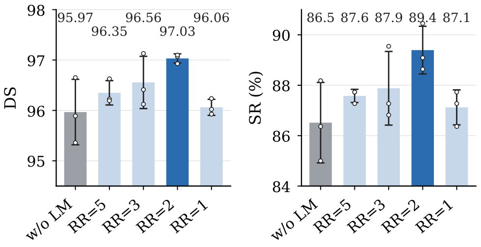
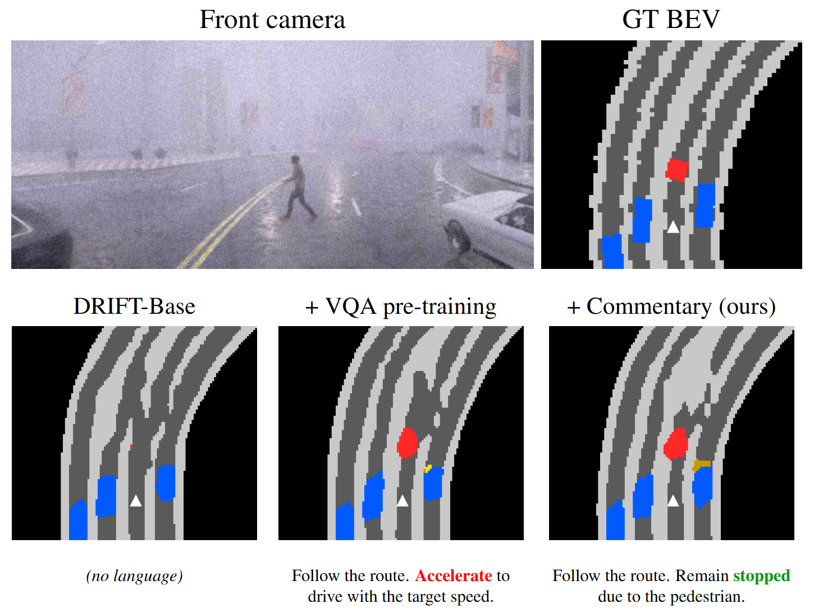
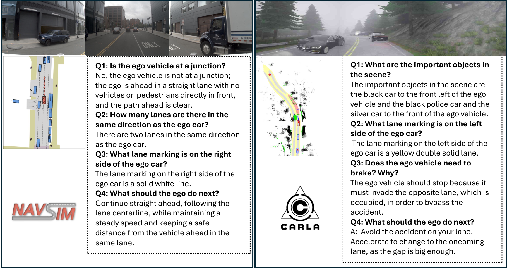

DRIFT: Detachable Reasoning for Runtime-Flexible and Efficient End-to-End Driving
1Technical University of Munich 2BMW Group 3University of Glasgow 4TU Wien
* Equal contribution. † Employed at BMW at time of submission.
Abstract
The integration of vision-language models (VLMs) into end-to-end (E2E) autonomous driving has demonstrated strong potential by providing scene description and reasoning capabilities. However, VLMs are computationally expensive, and switching language reasoning on and off at runtime without hurting closed-loop performance has not been demonstrated, which hinders practical adoption. To address these issues, we propose DRIFT, an E2E autonomous driving framework that integrates a lightweight language model (LM) for visual question answering and action commentary. By efficiently projecting intermediate driving representations into the language embedding space, we demonstrate that a compact LM (<150M parameters) can achieve strong scene description and action commentary. Furthermore, we introduce a runtime-flexible planning module that is trained on surrogate reasoning features distilled from the LM and can be conditioned on either the LM or the surrogate reasoning features at inference. This design enables bypassing the LM entirely when required by deployment constraints, without sacrificing driving performance. With only 255M parameters, DRIFT reaches up to a Driving Score (DS) of 97.03 and a Success Rate of 89.39% (mean over three runs) on Bench2Drive by interleaving its LM and surrogate reasoning at a chosen reasoning rate. This is on par with the strongest non-language models while being far more compact than existing VLM-based models. DRIFT further achieves competitive results on the real-world NAVSIM and AlpaSim benchmarks at significantly lower computational cost than existing VLM-based approaches.
Bench2Drive: Closed-Loop Driving Performance
| Method | Parameters | Frames | DS ↑ | SR (%) ↑ |
|---|---|---|---|---|
| Language-based models | ||||
| DriveMoE | 3B | 234K | 74.22 | 48.64 |
| ETA | 7B | 234K | 74.33±0.96 | 48.33±3.56 |
| VLR-Driver | 8.1B | 234K | 75.01 | 50.00 |
| ORION | 7B | 234K | 77.74 | 54.62 |
| SpaceDrive+ | 7.4B | – | 78.02 | 55.11 |
| AutoVLA | 3B | 600K | 78.84 | 57.73 |
| MindDrive-L | 3B | 234K | 80.59 | 58.26 |
| SimLingo | 1B | 3.1M | 85.07±0.95 | 67.27±2.11 |
| VLADriver-RAG | – | 234K | 89.12 | 70.42 |
| LinkVLA | 1B | – | 91.01 | 74.55 |
| Non-language models | ||||
| SimLingo-BASE | 355M | 3.1M | 85.94 | 66.82 |
| TFv6 | 126M | 1M | 95.2±0.3 | 86.8±0.7 |
| BridgeDrive | – | 1M | 96.34±0.55 | 89.25±0.50 |
| DRIFT w/o LM | 120M | 1M | 95.97±0.65 | 86.52±1.60 |
| DRIFT w/ LM | 255M | 1M | 97.03±0.09 | 89.39±0.95 |
DRIFT results are mean ± standard deviation over three closed-loop runs. DRIFT w/ LM uses a reasoning rate of 2.
Language Evaluation
| Dataset | Model | BLEU-4 ↑ | SPICE ↑ | CIDEr ↑ | ROUGE-L ↑ | METEOR ↑ |
|---|---|---|---|---|---|---|
| DriveLM-CARLA | DriveLM-CARLA (LLaMA-7B) | – | 72.71 | 1.15 | 71.20 | – |
| DriveLM-CARLA | SimLingo (Qwen2-0.5B) | 72.07 | 87.24 | 7.08 | 84.77 | 50.57 |
| DriveLM-CARLA | Ours (SmolLM2-135M) | 72.63 | 85.56 | 6.96 | 84.59 | 50.08 |
| Commentary | Ours (SmolLM2-135M) | 83.90 | 82.20 | 6.93 | 89.10 | 57.01 |
Real-World Benchmarks
| Method | Parameters | PDMS ↑ | EPDMS ↑ | AlpaSim score ↑ |
|---|---|---|---|---|
| FSDrive | 2B | 85.1 | – | – |
| AdaThinkDrive | 8B | 86.2 | – | – |
| FLARE | 4B | 86.9 | – | – |
| SGDrive | 2B | 87.4 | 27.1 | – |
| Qwen-Drive-1.0, SFT | 4B | 87.9 | 30.5 | 91.7 |
| LTFv6 (reported) | 69M | 85.4 | 28.3 | – |
| LTFv6 RegNetY-032‡ | 117M | 87.0 | 30.2 | 88.6 |
| DRIFT w/o LM‡ | 125M | 87.4 | 32.5 | 89.5 |
| DRIFT w/ LM‡ | 260M | 87.3 | 32.8 | 89.5 |
PDMS is reported on NAVSIM navtest; EPDMS on NAVSIM navhard; AlpaSim score is on the nuPlan track. ‡ Test-time heading post-processing is applied.
Effect of the LM Reasoning Rate

The LM is invoked every RR frames, and the surrogate reasoning is used in between. Invoking the LM periodically slightly improves driving over the model without LM (95.97 DS), with the best setting, RR=2, reaching 97.03 DS (+1.06 over no LM). Since RR was selected on this benchmark, the gain is regarded as indicative, and the gains of the other rates are within run-to-run variation. Invoking the LM at every frame (RR=1) is on par with no reasoning (96.06 vs. 95.97 DS) and below the intermediate rates.
Effect of Joint Training with Language

DRIFT-Base barely detects the crossing pedestrian, whereas after VQA pre-training the pedestrian is clearly grounded. This gain appears where expected: in scenarios with vulnerable road users, DS rises from 94.13 to 97.75 and pedestrian collisions drop from 7 to 2 (overall DS 95.45 → 95.94, a modest gain given the run-to-run variance). The LM of the VQA pre-trained variant has been finetuned on driving VQA for only 2 epochs and still answers “accelerate”. Adding joint commentary training sharpens the reasoning (“remain stopped due to the pedestrian”) and raises the commentary SPICE from 76.90 to 82.20, at no cost for the surrogate path (95.97 vs. 95.94 DS).
Examples
